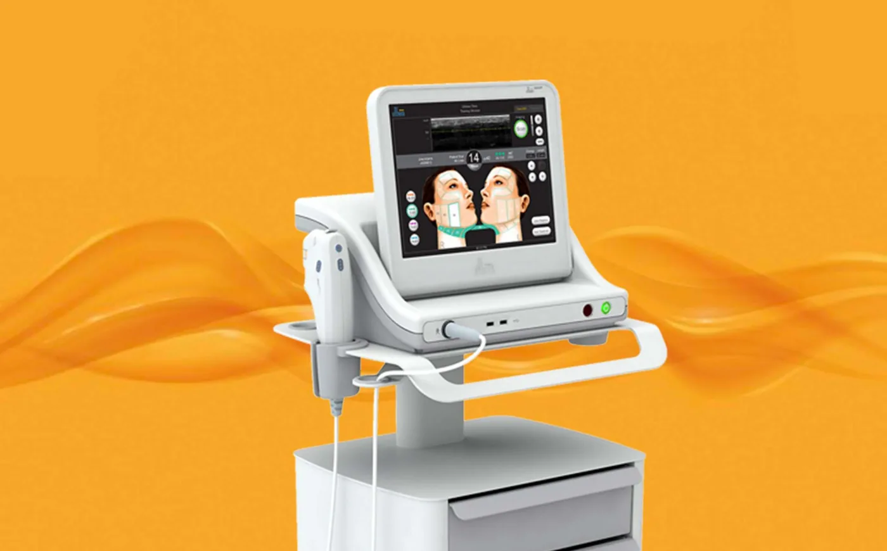
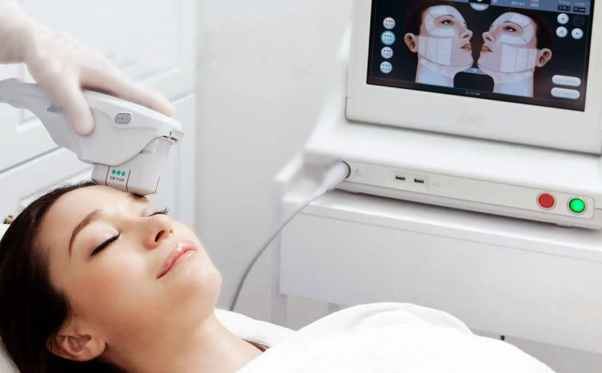
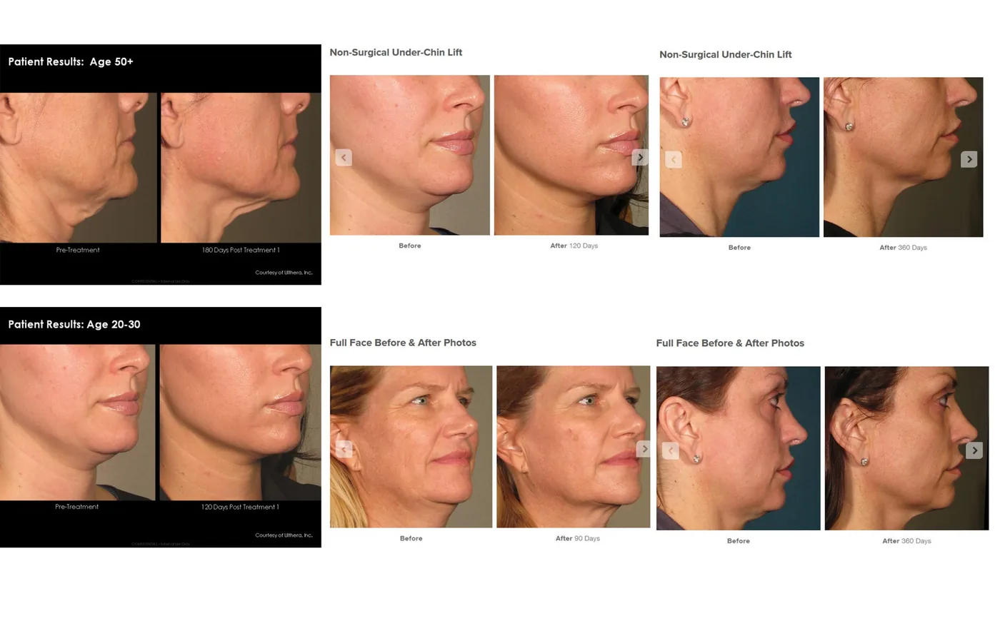

Freeze back in time with no surgery needed? Sounds like magic!
Hey there, beautiful! If you’re here, chances are, you might be looking for a cure to sagging skin and wrinkles, am I right? I understand that you might be feeling your ‘flaws’ are making you less confident than before, but as they say, wrinkles are engraved smiles. It shows how beautiful your life was and how precious those memories are.
Though I often say to my patients that wrinkles and skin-aging are natural; I, however, am a true believer in self-care and self-love. Sure, life can be beautiful, but if you are not feeling loved in your own skin, then what is the point? It could only lead to more self-deprecation and self-hate. And I don’t want that to happen to you.
So, if you have been feeling worn out by the endless cycle of trying anti-aging treatments that don’t work, then I am here to help you find the best solution you actually need. So get your tea, coffee, or anything, and let’s get started.
(Spoiler! The treatment I’m about to suggest is one only USFDA anti-aging treatments that have received GOLD Standard worldwide)

Ultherapy is used and approved by the USFDA to treat skin aging and sagging.
Ultherapy MFU (New!) – Harnessing the power of ultrasound energy to lift and tighten
So what is ultherapy? Ultherapy is a non-invasive procedure that harnesses the power of ultrasound energy to lift and tighten the skin naturally—without surgery or downtime. Ultherapy is the only FDA-cleared non-invasive procedure proven to lift skin on the neck, under the chin, the eyebrows, and lines and wrinkles of the décolletage and chest.
As the name suggests, Ultherapy is a non-surgical non-invasive micro-focused ultrasound treatment that stimulates the production of new collagen and elastin deep within the skin. Ultherapy uses precise ultrasound energy to target the deep structural skin layers without disrupting the surface. After the treatment, the body tissue repair process stimulates the production of new collagen and elastin, creating a natural lifting effect.
So, if you are looking for a more natural and effortless skin lifting treatment, I highly suggest Ultherapy.
What is the procedure of an Ultherapy treatment?
Ultherapy® lifts, sculpts, and tightens the skin from the inside out – without surgery and with minimal downtime. Unlike a surgical face-lift, there’s no need for needles or scalpels. It is the only non-invasive procedure FDA-cleared and EU CE mark certified procedure to lift the upper and lower face, under the chin, neck, and on the eyebrow, as well as improve the appearance of lines and wrinkles on the décolletage. Ultherapy has delivered over 1,250,000 treatments and has grown into a global leader in non-surgical aesthetics applications.

Ultherapy treatment is safe and pain free, no needles or toxins is used.
No toxins. No needles. Just safe.
Unlike lasers, radiofrequency, surgery, and other technologies, non-surgical Ultherapy bypasses the skin surface to deliver the right amount of ultrasound energy at the right depths and the right temperature. This energy triggers a natural response under the skin, jumpstarting the regenerative process that produces fresh, new collagen.
The outcome; no downtime, and natural results. Some patients see an initial effect right after their treatment. But the real results appear over 2−3 months as new collagen works to lift and tighten skin on the neck, chin, and brow, as well as smooth skin on the chest. While Ultherapy won’t duplicate the results of a facelift, it’s a clinically proven non-invasive alternative for those not ready for surgery—and can even be an option for patients who wish to extend the effects of cosmetic surgery.
So, why do I recommend getting Ultherapy?
The treatment has absolutely no downtime and results are guaranteed. Your skin will feel firmer, younger-looking, and the face appears much smaller as it takes away bulk and some volume off the face. People with sagging skin and skin turgor will see almost immediate improvement and you will appear more youthful with a much sharper facial contour and reduction of a double chin.

Anyone that faces skin aging and sagging issue can benefit from Ultherapy treatment as it tightens and lift your skin in the most natural and safest way.
Ultherapy; does it work for everyone?
A good candidate for Ultherapy is someone with some degree of laxity, to the point of looking, and feeling less tightness in their skin. Loose skin under the neck and under the chin, or lines and wrinkles on the chest, are signals a patient might need Ultherapy.
Typically, those in their 30s and older who have mild to moderate skin laxity. There also are younger people who want to “stay ahead of the game,” as well as patients wanting an aesthetic maintenance option.
Everyone can get this treatment and walk away with tons of benefits. Almost 99.9% of my patients and customers have shown marvelous results and are very happy with the treatment. Look at the before & after images for reference.
Turn Back The Clock
Ultherapy can effectively rejuvenate your skin, and without the need for surgery, it can firm and tighten your skin. It’s also one of the only treatments that tighten skin with focused ultrasound technology.
The top benefit of getting the Ultherapy procedure is that it can help you look years younger. Skin starts to droop and loosen as part of the aging process, but Ultherapy can turn back the clock to give you a more youthful and vibrant appearance. By tightening loose skin, the procedure will slow down the impact that the aging process has on your skin so that you can keep your youthful appearance longer.
Any tips before starting treatment?
Well, I would say, seeking treatment early is the best way to go! If you feel like your “insecurities” are bringing yourself down way too much than they should have, it is always a good suggestion to get the right diagnosis.
Get your consultation at Dr Abby Clinic and we’ll offer the suitable treatments for your skin concern.
#1 Best Reviewed Aesthetic Clinic in Malaysia
Your beauty is our duty. Dr. Abby Clinic is a personalized cosmetic medical clinic offering a wide range of aesthetic & anti-aging medicine services. We strive to be the most reliable, professional, result-oriented & friendly aesthetic in town! Because everybody deserves to look and feel good & be comfortable in their own skin!
Our clinic is a fully MOH registered clinic led by LCP Certified Doctors. So you can look fantastic, feel beautiful, and be confident in your own skin with no worries. Contact us today, and we will get started by giving you a thorough skin analysis.
Click here to book an appointment with us today, beautiful.
Dr Abby
Categories
Related treatments